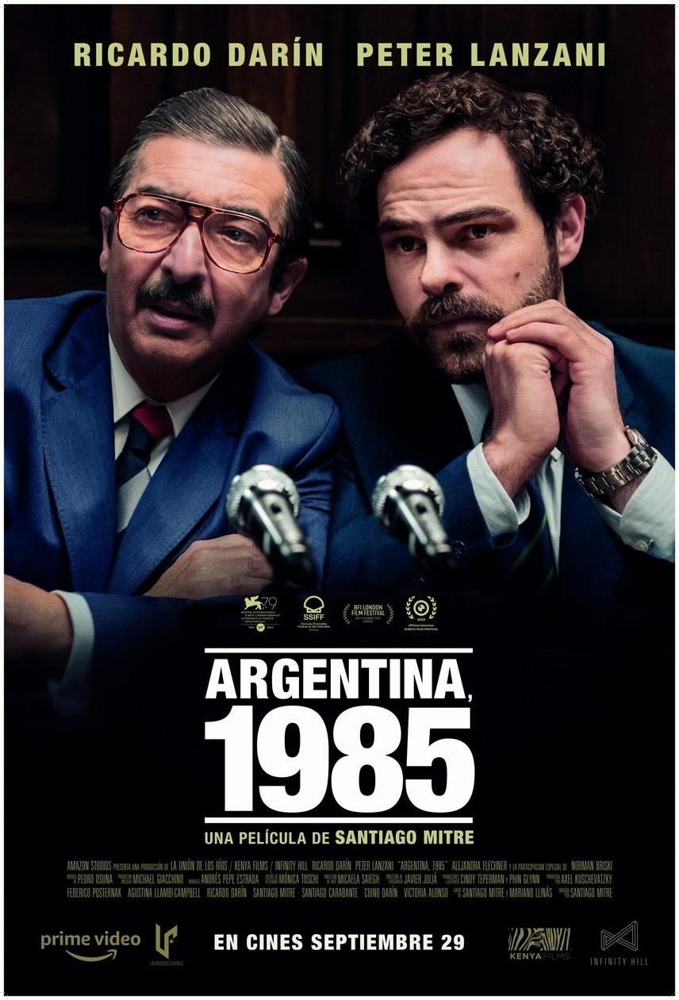
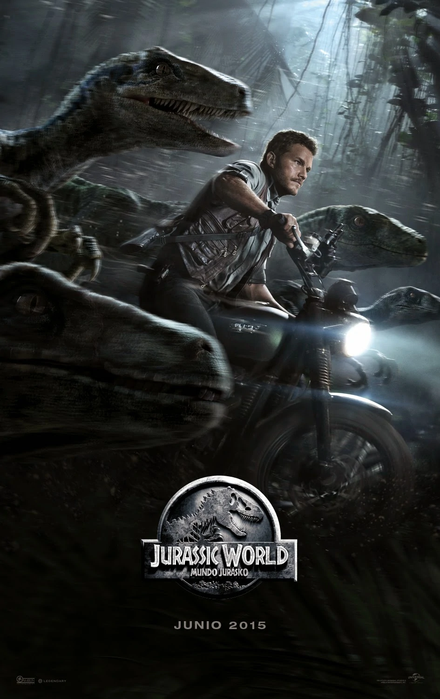
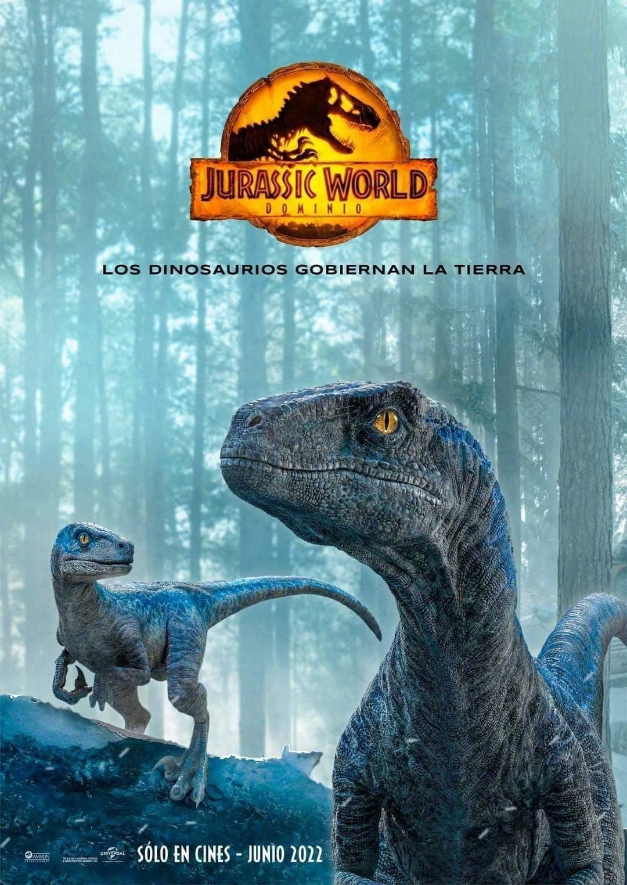
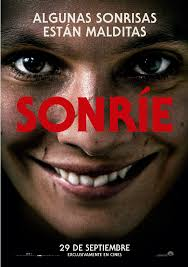
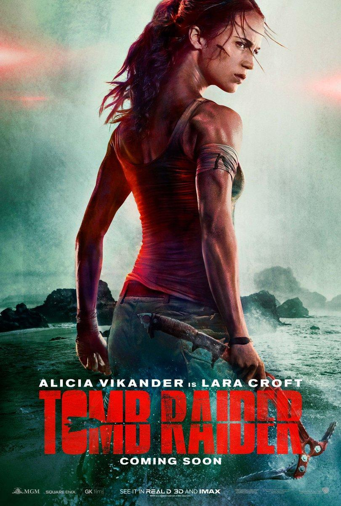

Argentina 1985
Argentina, 1985 está inspirada en la historia real de Julio Strassera, Luis Moreno Ocampo y su joven equipo jurídico que se atrevieron a acusar, contra viento y marea, a contrarreloj y bajo constante amenaza, a la más sangrienta dictadura militar argentina. Una batalla de David contra Goliat, con los héroes menos esperados.
Cisne Negro

Una bailarina empieza a perder el frágil sentido de la realidad cuando una compañera recién llegada amenaza con usurpar su posición en el papel principal de "El lago de los cisnes".
Jurassic World
Una nueva especie de dinosaurio, creada por los científicos de forma artificial, es más inteligente y peligrosa que los animales conocidos y termina por atacar a los turistas que visitan el parque temático Jurassic World, situado en una isla frente a Costa Rica.
Jurassic World Dominion
La isla Nublar y su parque han sido destruidos, pero el problema no se terminó. Con los dinosaurios dispersos por todo el mundo, la convivencia entre el presente y el pasado alcanza un nuevo nivel de tensión.
Sonrie
Tras presencia el dramático incidente sufrido por un paciente, la Dra. Cotter empieza a experimentar hechos aterradores sin explicación aparente. A medida que el horror se adueña de su vida, comprende que la respuesta está en su propio pasado.
Tomb Raider
La joven Lara Croft, cansada de su vida como mensajera en bicicleta, lo abandona todo para ir en busca de su padre, quien desapareció de una isla ubicada en algún lugar de la costa de Japón.
Uncharted

El cazador de tesoros Victor Sullivan recluta a Nathan Drake para que lo ayude a recuperar una fortuna de 500 años de antigüedad. Lo que comienza como un atraco se convierte en una competencia contra el despiadado Santiago Moncada.